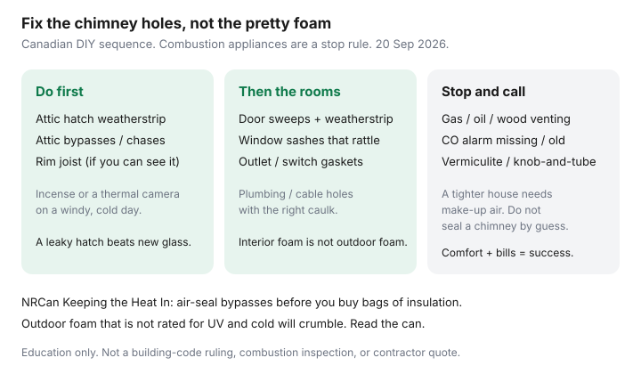

Utilities · Canada
DIY air sealing for Canadian homes: highest-impact drafts to fix first
People buy a gun of expanding foam and foam the first gap they can see from the couch. The expensive leaks in a Canadian house are usually above their heads: the attic hatch, the plumbing chase that is a chimney, the rim joist in the basement. Foam the wrong thing and you still heat the yard.
This is a prioritized DIY sequence with a hard stop for combustion safety. It complements attic R-values — that guide is about how much insulation; this one is about which holes to close first. For the larger order of renovations, see ROI stack.
Key takeaways
- Find drafts on a cold, windy day: incense or a stick of punk, a damp hand, or a cheap thermal camera at the hatch, baseboards, outlets, and attic penetrations.
- Do the attic hatch and bypasses before decorative window foam. Then weatherstrip doors that actually get used.
- Use materials rated for the location. Interior foam is not exterior foam. Some outdoor products fail in a Canadian January.
- Stop if the work touches a furnace, boiler, water heater, wood stove, or chimney. A tighter house can backdraft. Working CO alarms are not optional.
- Success is comfort plus a bill that moves versus similar weather — not a perfect n50 score.
Find drafts: incense, thermal patterns, baseboards, outlets, attic hatches
Pick a day when the house is at least 15°C warmer than outdoors and the wind is up. Turn off the kitchen hood and bathroom fans so you are not creating your own weather. Then:
- Stand under the attic hatch. A ribbon or incense stick will lean if the hatch is a hole. Feel the weatherstrip — or the absence of one.
- Walk the attic (safe boards only) and look for dark insulation streaks, uncovered pot lights, and open plumbing or wiring chases. Those are chimneys.
- Basement: the rim joist where the floor sits on the foundation. You can often see daylight or cobwebs moving.
- Main floor: electrical boxes on exterior walls, plumbing penetrations under sinks, the gap under the front door, window locks that no longer pull the sash tight.
A $200 handheld thermal camera is optional. Your hand on a windy night is free. If you want a number, that is an EnerGuide blower door — useful before a large contract, not required to weatherstrip a hatch.

Materials that work in Canadian winters (and what fails outdoors)
| Job | Usually right | Usually wrong |
|---|---|---|
| Attic hatch lid | Adhesive foam weatherstrip plus a latch that compresses it; rigid foam taped to the lid | A folded towel. A loose batt that falls on your head |
| Attic bypasses | Water-based fire-rated caulk or canned foam labelled for the gap size; cover with insulation after | Foaming around a recessed light that is not IC-rated; burying knob-and-tube |
| Doors / windows | V-strip or silicone tubular weatherstrip; door sweep that meets the threshold | Fuzzy pile that flattened in 2014; interior foam on an exterior brick gap |
| Exterior penetrations | Exterior-grade, paintable, cold-rated caulk or foam; then flashing or a cover | Window-and-door interior foam left in the sun |
| Outlets on exterior walls | Foam gaskets behind the cover plate; child-safe plugs in unused sockets | Expanding foam squirted into the box |
Closed-cell foam beads that are not rated for UV turn to crumbs on a south wall. Acoustic latex caulk is the quiet hero for baseboard gaps that are not a fire-rated penetration. When in doubt, the hardware-store staff can read the can with you — bring a photo of the gap.
Door and window weatherstripping sequence
- Clean the jamb. New tape will not stick to a decade of grit.
- Close the door on a strip of paper. Where the paper slides out easily, you need compression.
- Replace the sweep last, after the side and head jambs, so you can set the height.
- Windows: lock them. A locked sash is weatherstripping. Then replace flattened pile. Interior film is a winter-only layer for rooms you can live without opening.
Do the door you actually use every day before the decorative side door that stays bolted from November to April.
Electrical outlet gaskets and plumbing penetrations
Kill the breaker. Remove the cover plate. A foam gasket takes ten seconds. Do not foam inside the box. Under sinks, the gap around the trap stack is often a highway to the basement. Backer rod plus paintable caulk beats a mountain of foam you will cut away during the next leak. Cable and dryer-vent hoods on the exterior wall want exterior caulk and a working flapper — a crushed vent is a moisture problem, not just a draft.
When to stop DIY and call a pro (combustion safety)
A leaky house accidentally supplies make-up air to a furnace, boiler, wood stove, or gas water heater. Seal enough holes and the appliance can pull flue gases back into the room. That is carbon monoxide, not a comfort complaint.
- Working CO alarms on every level, replaced on the date printed on the back, before you start a tightening campaign.
- Do not seal or “improve” a chimney, barometric damper, or side-wall vent by guess.
- If you have a wood stove, oil burner, or an older naturally aspirated furnace, get a combustion safety check after major air sealing — or hire the air sealing.
- Vermiculite (possible asbestos) and knob-and-tube are stop rules. So is a wet roof or a bathroom fan that terminates in the attic.
NRCan’s insulation guidance says the same thing in more words: air-seal, but do not create a hazardous appliance. This is education, not a WETT or TSSA inspection.
Measuring success with bills and comfort, not perfection
You will not get a new-build blower-door number with $80 of weatherstrip. You may get a bedroom that no longer needs a space heater, a hatch that does not frost, and a February bill that is down versus last February if the weather was similar. Compare kWh or m³, not just the dollar line (rates move). Equal billing can hide the win — look at usage in the equal-billing guide.
If the house is still a barn after the hatch, rim, and doors, that is when blown-in insulation or an EnerGuide visit earns its keep — not another impulse can of foam.
Sources & date stamps
- NRCan home energy-efficiency / Keeping the Heat In — air-seal bypasses before insulation; combustion caution (used 20 Sep 2026).
- Hydro-Québec Energy Wise — draft and thermostat habits as bill levers.
- Community patterns (r/askTO and similar) — directional complaints about hatches and rental foam, not a survey.
- Greener Homes closure — no federal DIY grant for this work; provincial lists only.
Frequently asked questions
What should I air-seal first?
The attic hatch, then attic bypasses (plumbing and wiring chases, pot lights), then the rim joist if you can see it. Doors, windows, and outlet gaskets come after the big holes.
Can I use any spray foam outdoors?
No. Interior window-and-door foam is not UV- or cold-rated exterior foam. Read the can. Outdoor beads that are not rated for Canadian winters crumble.
When must I stop and call a pro?
Any time the work touches combustion venting, you lack working CO alarms, you suspect vermiculite or knob-and-tube, or the house has a wood stove or oil burner and you are tightening it a lot.
How do I know it worked?
Fewer cold streaks at the hatch and baseboards, quieter wind noise, and a winter bill that is down versus a similar-weather month — not a perfect blower-door score.
Is this still a Greener Homes project?
No. Greener Homes is closed to new applicants. Some provincial streams still list a small air-sealing rebate. Verify live; do not wait on a federal form.